Home / Past papers / MLT End Term / this paper
Machine Learning Techniques 13 Sep 26 (Session 2) - 13 Sep 2026
Elapsed 00:00
Let  points in
points in  ) is run on both
) is run on both
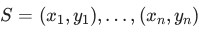
be points in 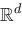
that are linearly separable by a hyperplane through the origin. Construct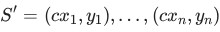
where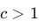
is a constant. The perceptron algorithm (initialised at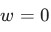
, learning rate ) is run on both 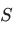
and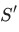
, using the same ordering of points in both runs. Which of the following statements are true?- The mistake bound of the perceptron on is strictly larger than its mistake bound on .
- may fail to be linearly separable.
- The perceptron is guaranteed to converge on .
- The perceptron produces exactly the same decision boundary on and on .
Consider binary classification on input features  . Define the decision boundary of a trained classifier as the set of points at which its predicted label changes. For which of the following method(s) can this decision boundary be non-linear in
. Define the decision boundary of a trained classifier as the set of points at which its predicted label changes. For which of the following method(s) can this decision boundary be non-linear in  ?
?
. Define the decision boundary of a trained classifier as the set of points at which its predicted label changes. For which of the following method(s) can this decision boundary be non-linear in ?- Perceptron.
- Logistic regression, predicting the positive class when
 .
. - -nearest-neighbour with Euclidean distance.
- A decision tree using axis-aligned splits.
- Gaussian Naïve Bayes in which the class-conditional feature variances differ between the two classes.
- A support vector machine with a linear kernel.
- A support vector machine with an RBF (Gaussian) kernel.
Let
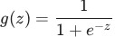
be the sigmoid (logistic) function. Select all statements below that are true for every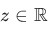
.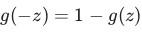
.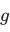
is a non-decreasing function but not strictly increasing.- is a strictly increasing function.
- is convex on all of
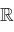
.
Identify the correct relationship(s) between bias, variance, and the hyperparameter  in the - Nearest Neighbours algorithm.
in the - Nearest Neighbours algorithm.
in the - Nearest Neighbours algorithm.- Increasing leads to an increase in bias.
- Decreasing leads to an increase in bias.
- Increasing leads to an increase in variance.
- Decreasing leads to an increase in variance.
Consider the effect of each operation below on a model's bias and variance. Which of the following statements are correct?
- Regularising the weights in a linear/logistic regression model increases bias and decreases variance.
- Increasing the maximum depth of a decision tree increases bias and decreases variance.
- Increasing the number of hidden units in a neural network decreases bias and increases variance.
- Removing all the non-support-vectors from the training set of an SVM leaves both bias and variance unchanged.
In logistic regression, a point is classified positive only if  . What score threshold
. What score threshold  (with
(with  at the boundary of this rule) does this correspond to? (Round to 2 decimal places.)
at the boundary of this rule) does this correspond to? (Round to 2 decimal places.)
. What score threshold (with at the boundary of this rule) does this correspond to? (Round to 2 decimal places.)You build a fully-connected feed-forward neural network for a classification task. The input is a  - dimensional vector; the network has two hidden layers of
- dimensional vector; the network has two hidden layers of  neurons each, followed by an output layer of
neurons each, followed by an output layer of  neurons. Every layer is densely (fully) connected to the next. Ignoring all bias terms, compute the total number of weight parameters in the network. (Enter
neurons. Every layer is densely (fully) connected to the next. Ignoring all bias terms, compute the total number of weight parameters in the network. (Enter  if it cannot be determined.)
if it cannot be determined.)
- dimensional vector; the network has two hidden layers of neurons each, followed by an output layer of neurons. Every layer is densely (fully) connected to the next. Ignoring all bias terms, compute the total number of weight parameters in the network. (Enter if it cannot be determined.)Let  be the solution to the ordinary least-squares linear regression problem
be the solution to the ordinary least-squares linear regression problem
 . Which of the following is always satisfied at ? Note that here
. Which of the following is always satisfied at ? Note that here  is your feature matrix and
is your feature matrix and  is the label vector.
is the label vector.
be the solution to the ordinary least-squares linear regression problem
. Which of the following is always satisfied at ? Note that here is your feature matrix and is the label vector.


Consider a scenario where we use leave-one-out cross-validation (LOOCV) with a Support Vector Machine (SVM) for binary classification. Given a dataset  otherwise, where
otherwise, where  be the number of support vectors obtained by training on the full dataset ?
be the number of support vectors obtained by training on the full dataset ?
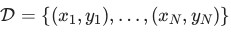
, the cross- validation error for a sample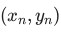
is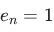
if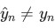
and otherwise, where 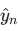
is the prediction for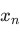
produced by the SVM trained on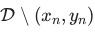
. The overall cross-validation error is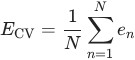
. Let be the number of support vectors obtained by training on the full dataset 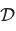
. Which statement is true regarding the relationship between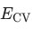
and ?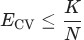
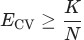
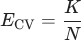
- is independent of
Consider one-dimensional ridge regression with no bias term. Given
 and
and
 , with
, with  , compute the optimal
, compute the optimal  . Note that
. Note that  is
is  th data point and
th data point and  is th label. (Round to 2 decimal places.)
is th label. (Round to 2 decimal places.)
and
, with , compute the optimal . Note that is th data point and is th label. (Round to 2 decimal places.)For the covariance matrix
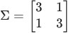
, compute the variance captured along the first principal component.


Given a dataset with discrete attributes, each taking exactly 5 possible values (where  ), for a three-class classification task, the number of parameters to be estimated for learning a naïve Bayes classifier is:
), for a three-class classification task, the number of parameters to be estimated for learning a naïve Bayes classifier is:
discrete attributes, each taking exactly 5 possible values (where ), for a three-class classification task, the number of parameters to be estimated for learning a naïve Bayes classifier is:


For an optimal soft-margin SVM solution (no bias term), a training point satisfies
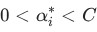
. Here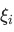
denotes the slack variable for this point, and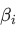
is the Lagrange multiplier on the constraint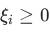
. Which statement is necessarily true?- The point is misclassified by .
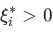
.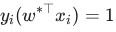
and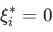
.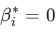
.
Consider a binary classification dataset in which the two classes are perfectly linearly separable. You are considering a Perceptron, Logistic Regression, and a Decision Tree. If the objective is to learn a linear decision boundary and no probability estimates are required, which of the following classifiers are appropriate choices?
- Perceptron only
- Logistic Regression only
- Both Perceptron and Logistic Regression
- Decision Tree only
A Euclidean-distance-based -means clustering algorithm was run on a dataset of  points with , then which ONE of the following points is necessarily also part of cluster ?
points with , then which ONE of the following points is necessarily also part of cluster ?
-means clustering algorithm was run on a dataset of points with 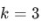
. If the points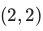
and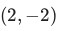
are both part of cluster , then which ONE of the following points is necessarily also part of cluster ?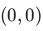
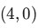

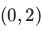
Note: coordinates of x1 vector are intentionally not provided.
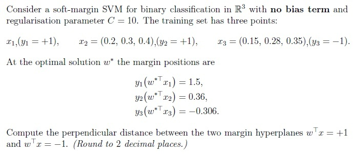
Which of the following statements about entropy and information gain in decision-tree learning are correct?
- If a feature splits a node into perfectly pure children, its information gain at that node equals the entropy of that node.
- A node whose examples all belong to a single class has entropy and needs no further splitting.
- Information gain can be negative if a split increases impurity.
- After a parent node is split into child nodes, no individual child node can have entropy greater than the parent node's entropy.
Which of the following statements about bagging are correct?
- Bagging reduces the variance of the ensemble's prediction.
- Bagging substantially reduces the bias of the base learner.
- Bagging tends to help most when the base learners are diverse (weakly correlated with one another).
- Bagging tends to help most with high-variance, low-bias base learners such as deep, unpruned decision trees.
- averaging all base learner reduces variance, if every base learner produces identical predictions.
Suppose we model data as  with a single unknown parameter
with a single unknown parameter  and known variance (each
and known variance (each  ). You perform maximum-likelihood estimation of
). You perform maximum-likelihood estimation of  . The MLE of must satisfy which of the following equations? Note that is a feature and is a label.
. The MLE of must satisfy which of the following equations? Note that is a feature and is a label.
with a single unknown parameter and known variance (each ). You perform maximum-likelihood estimation of . The MLE of must satisfy which of the following equations? Note that is a feature and is a label.


Answer key
- Q1 (MSQ, 4 marks): C, D
- Q2 (MSQ, 4 marks): C, D, E, G
- Q3 (MSQ, 2 marks): A, C
- Q4 (MSQ, 2 marks): A, D
- Q5 (MSQ, 2 marks): A, C, D
- Q6 (SA, 2 marks): 1.08 to 1.10
- Q7 (SA, 2 marks): 180
- Q8 (MCQ, 4 marks): A
- Q9 (MCQ, 4 marks): A
- Q10 (SA, 3 marks): 0.19 to 0.21
- Q11 (MCQ, 1 marks): C
- Q12 (MCQ, 1 marks): B
- Q13 (MCQ, 2 marks): C
- Q14 (MCQ, 2 marks): C
- Q15 (MCQ, 2 marks): C
- Q16 (SA, 4 marks): 2.71 to 2.73
- Q17 (MSQ, 3 marks): A, B
- Q18 (MSQ, 3 marks): A, C, D
- Q19 (MCQ, 3 marks): A